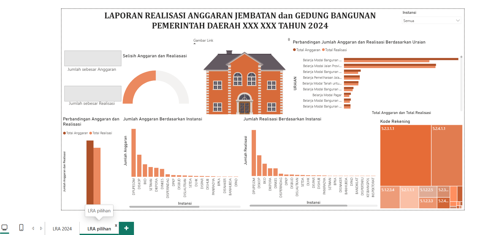
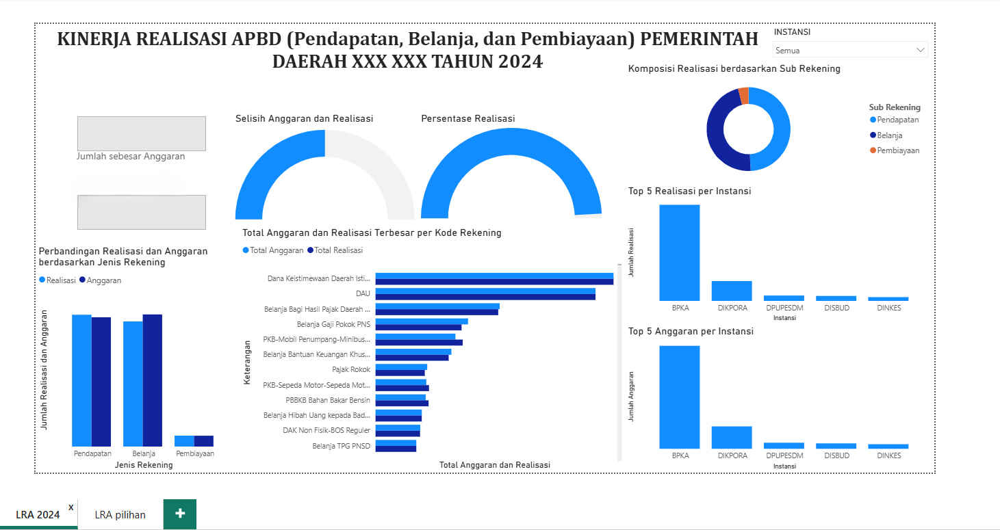
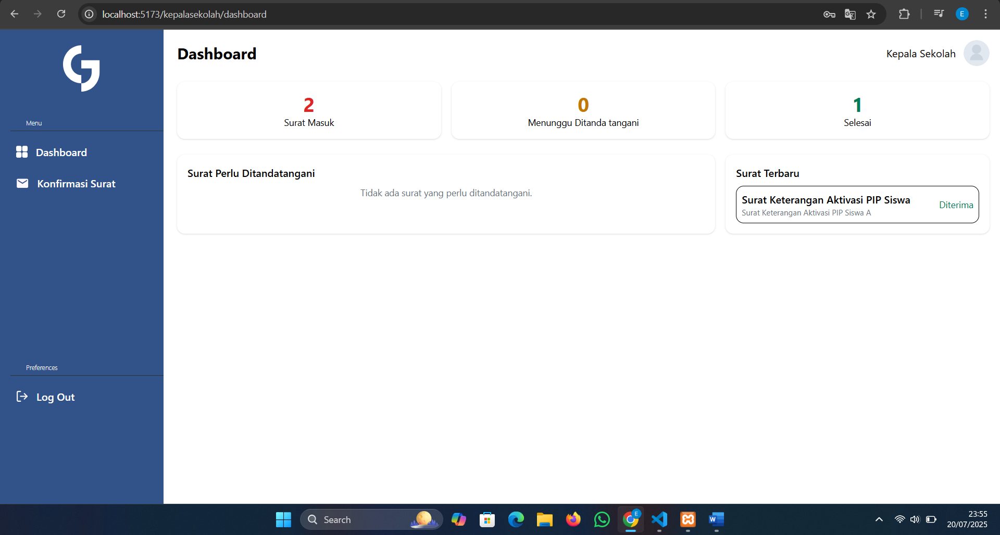
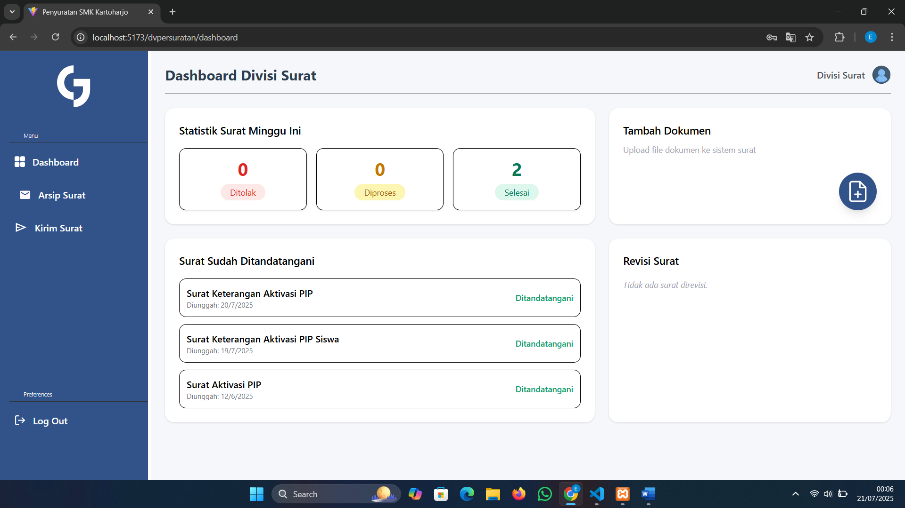
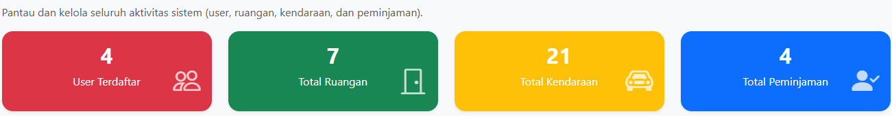
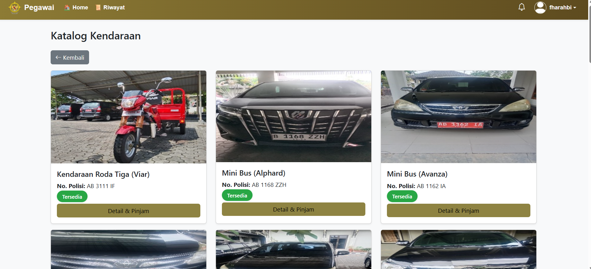
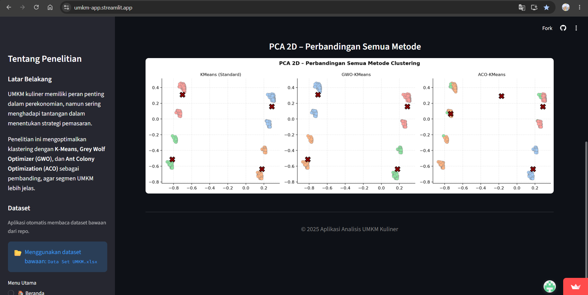

03
Proyek

LRA 2024
Kinerja APBDBPK Perwakilan DIY
Dashboard Anggaran Tahunan
Merancang dashboard visualisasi anggaran dan realisasi anggaran tahun 2024–2025 sebagai bahan analisis dan pengambilan keputusan internal instansi.
Lihat kode & dokumentasi di GitHub →
Kepala Sekolah
Divisi SuratTugas Kelompok — MPTI
Sistem Informasi Persuratan Sekolah
Aplikasi web pengelolaan surat masuk dan keluar atas permintaan dinas terkait, digunakan secara internal oleh sekolah.
Lihat dokumentasi & tampilan→
Dashboard Admin
Katalog KendaraanBPK Perwakilan DIY
Aplikasi Peminjaman Barang & Ruangan
Aplikasi peminjaman kendaraan dan ruangan dengan pencatatan otomatis tanggal peminjaman dan pengembalian.
Lihat dokumentasi & tampilan→ Perbandingan Hasil
Perbandingan Hasil

Visualisasi PCASkripsi — S1 Informatika UAD
Optimasi Clustering K-Means dengan Grey Wolf Optimizer
Silhouette Score 0,53 vs 0,43 (K-Means)Mengoptimalkan algoritma K-Means dengan Grey Wolf Optimizer untuk mengelompokkan 1.117 data UMKM kuliner Yogyakarta ke dalam 4 segmen sebagai dasar strategi pemasaran. Hasil GWO-KMeans terbukti unggul secara statistik (Uji Friedman, p<0,05) dibanding K-Means standar dan ACO-KMeans.